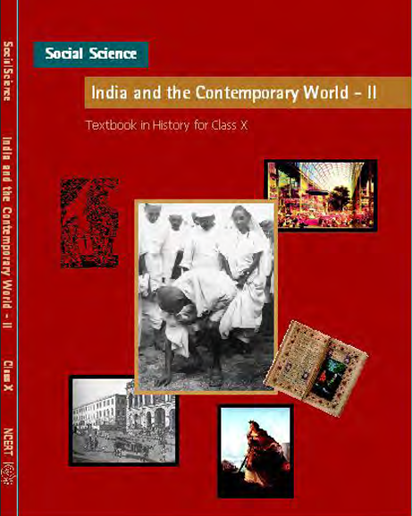

Class 10
NCERT Solutions for Class 10 Mathematics
Get chapter-wise mathematics solutions with clear explanations and step-by-step answers.
Explore Solutions →NCERT

Explore more NCERT solutions and other resources with Saraswat Academy.
Get chapter-wise mathematics solutions with clear explanations and step-by-step answers.
Explore Solutions →Study important concepts, exercise solutions and chapter-wise mathematics answers.
Explore Solutions →Understand science concepts with detailed answers to textbook questions.
Explore Solutions →Explore chapter-wise science solutions, explanations and useful study resources.
Explore Solutions →Improve your English skills with detailed answers to textbook questions.
Explore Solutions →Improve your English skills with detailed answers to textbook questions.
Explore Resources →Improve your Hindi skills with detailed answers to textbook questions.
Explore Resources →Improve your Hindi skills with detailed answers to textbook questions.
Explore Resources →Improve your Hindi skills with detailed answers to textbook questions.
Explore Resources →Improve your Social Science skills with detailed answers to textbook questions.
Explore Resources →Improve your Social Science skills with detailed answers to textbook questions.
Explore Resources →Improve your Social Science skills with detailed answers to textbook questions.
Explore Resources →Detailed NCERT solutions for class 9 sanskrit.
Explore Resources →